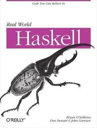

class: center, middle # **우선순위 하스켈 함수** ### 하스켈 학교 세미나 ### 전정호 ### 2017-01-10 --- # precedence (fixity) ```haskell -- fixity 10, function application infixl 9 !! -- default infixr 9 . infixr 8 ^, ^^, ** infixl 7 *, /, `quot`, `rem`, `div`, `mod` infixl 6 +, - -- unary negation, too infixr 5 ++, : infix 4 ==, /=, <, <=, >=, >, `elem`, `notElem` infixr 3 && infixr 2 || infixl 1 >>, >>= infixr 1 =<< infixr 0 $, $!, `seq` -- the lowest fixity, -- lambda abstractions, else clauses, let ... in clauses ``` --- class: center, middle <div style="font-size: 500%">끝!</div> --- class: center, middle 하스켈은 책으로 공부해도 실제 코드를 읽고 이해하기 매우 힘들다! 그나마 "Real World Haskell"이 실전 코드를 설명하지만, Functor 보다 Monad를 먼저 설명하는 ...  --- class: center, middle 이런 방법은 어떨까? --- # GitHub Trending <div align="center" style="margin: 0px auto"> <table> <tr> <th style="font-size: 60%"></th> <th style="font-size: 60%">this month</th> <th style="font-size: 60%">this week</th> <th style="font-size: 60%">today</th> </tr> <tr> <td style="font-size: 60%; text-align:center">1</td> <td style="font-size: 60%; text-align:center"><span style="color: gray">haskus /</span> haskus-system</td> <td style="font-size: 60%; text-align:center"><span style="color: gray">haskus /</span> haskus-system</td> <td style="font-size: 60%; text-align:center"><span style="color: gray">koalaman /</span> shellcheck</td> </tr> <tr> <td style="font-size: 60%; text-align:center">2</td> <td style="font-size: 60%; text-align:center"><span style="color: gray">jgm /</span> pandoc</td> <td style="font-size: 60%; text-align:center"><span style="color: gray">ChrisPenner /</span> rasa</td> <td style="font-size: 60%; text-align:center"><span style="color: gray">idris-lang /</span> Idris-dev</td> </tr> <tr> <td style="font-size: 60%; text-align:center">3</td> <td style="font-size: 60%; text-align:center"><span style="color: gray">koalaman /</span> shellcheck</td> <td style="font-size: 60%; text-align:center"><span style="color: gray">jgm /</span> pandoc</td> <td style="font-size: 60%; text-align:center"><span style="color: gray">jgm /</span> pandoc</td> </tr> <tr> <td style="font-size: 60%; text-align:center">4</td> <td style="font-size: 60%; text-align:center"><span style="color: gray">begriffs /</span> postgrest</td> <td style="font-size: 60%; text-align:center"><span style="color: gray">koalaman /</span> shellcheck</td> <td style="font-size: 60%; text-align:center"><span style="color: gray">purescript /</span> purescript</td> </tr> <tr> <td style="font-size: 60%; text-align:center">5</td> <td style="font-size: 60%; text-align:center"><span style="color: gray">input-output-hk /</span> pos-haskell-prototype</td> <td style="font-size: 60%; text-align:center"><span style="color: gray">riaqn /</span> zhina-dns</td> <td style="font-size: 60%; text-align:center"><span style="color: gray">haskell /</span> containers</td> </tr> <tr> <td style="font-size: 60%; text-align:center">6</td> <td style="font-size: 60%; text-align:center"><span style="color: gray">purescript /</span> purescript</td> <td style="font-size: 60%; text-align:center"><span style="color: gray">Peaker /</span> git-mediate</td> <td style="font-size: 60%; text-align:center"><span style="color: gray">purescript /</span> pursuit</td> </tr> <tr> <td style="font-size: 60%; text-align:center">7</td> <td style="font-size: 60%; text-align:center"><span style="color: gray">Gabriel439 /</span> Haskell-Dhall-Library</td> <td style="font-size: 60%; text-align:center"><span style="color: gray">idris-lang /</span> Idris-dev</td> <td style="font-size: 60%; text-align:center"><span style="color: gray">Gabriel439 /</span> Haskell-Errors-Library</td> </tr> <tr> <td style="font-size: 60%; text-align:center">8</td> <td style="font-size: 60%; text-align:center"><span style="color: gray">ChrisPenner /</span> rasa</td> <td style="font-size: 60%; text-align:center"><span style="color: gray">begriffs /</span> postgrest</td> <td style="font-size: 60%; text-align:center"><span style="color: gray">simonmichael /</span> hledger</td> </tr> <tr> <td style="font-size: 60%; text-align:center">9</td> <td style="font-size: 60%; text-align:center"><span style="color: gray">commercialhaskell /</span> stack</td> <td style="font-size: 60%; text-align:center"><span style="color: gray">purescript /</span> purescript</td> <td style="font-size: 60%; text-align:center"><span style="color: gray">mortberg /</span> cubicaltt</td> </tr> <tr> <td style="font-size: 60%; text-align:center">10</td> <td style="font-size: 60%; text-align:center"><span style="color: gray">snowleopard /</span> alga</td> <td style="font-size: 60%; text-align:center"><span style="color: gray">mmhelloworld /</span> idris-jvm</td> <td style="font-size: 60%; text-align:center"><span style="color: gray">typelead /</span> eta</td> </tr> <tr> <td style="font-size: 60%; text-align:center">11</td> <td style="font-size: 60%; text-align:center"><span style="color: gray">idris-lang /</span> Idris-dev</td> <td style="font-size: 60%; text-align:center"><span style="color: gray">input-output-hk /</span> pos-haskell-prototype</td> <td style="font-size: 60%; text-align:center"><span style="color: gray">begriffs /</span> postgrest</td> </tr> <tr> <td style="font-size: 60%; text-align:center">12</td> <td style="font-size: 60%; text-align:center"><span style="color: gray">facebook /</span> Haxl</td> <td style="font-size: 60%; text-align:center"><span style="color: gray">commercialhaskell /</span> stack</td> <td style="font-size: 60%; text-align:center"><span style="color: gray">elm-lang /</span> elm-compiler</td> </tr> <tr> <td style="font-size: 60%; text-align:center">13</td> <td style="font-size: 60%; text-align:center"><span style="color: gray">quchen /</span> articles</td> <td style="font-size: 60%; text-align:center"><span style="color: gray">sdiehl /</span> write-you-a-haskell</td> <td style="font-size: 60%; text-align:center"><span style="color: gray">facebook /</span> Haxl</td> </tr> <tr> <td style="font-size: 60%; text-align:center">14</td> <td style="font-size: 60%; text-align:center"><span style="color: gray">tensorflow /</span> haskell</td> <td style="font-size: 60%; text-align:center"><span style="color: gray">tensorflow /</span> haskell</td> <td style="font-size: 60%; text-align:center"><span style="color: gray">caiorss /</span> Functional-Programming</td> </tr> <tr> <td style="font-size: 60%; text-align:center">15</td> <td style="font-size: 60%; text-align:center"><span style="color: gray">sdiehl /</span> write-you-a-haskell</td> <td style="font-size: 60%; text-align:center"><span style="color: gray">commercialhaskell /</span> intero</td> <td style="font-size: 60%; text-align:center"><span style="color: gray">commercialhaskell /</span> stack</td> </tr> <tr> <td style="font-size: 60%; text-align:center">16</td> <td style="font-size: 60%; text-align:center"><span style="color: gray">yesodweb /</span> yesod</td> <td style="font-size: 60%; text-align:center"><span style="color: gray">snowleopard /</span> alga</td> <td style="font-size: 60%; text-align:center"><span style="color: gray">yesodweb /</span> yesod</td> </tr> <tr> <td style="font-size: 60%; text-align:center">17</td> <td style="font-size: 60%; text-align:center"><span style="color: gray">ghc /</span> ghc</td> <td style="font-size: 60%; text-align:center"><span style="color: gray">ghc /</span> ghc</td> <td style="font-size: 60%; text-align:center"><span style="color: gray">sdiehl /</span> write-you-a-haskell</td> </tr> <tr> <td style="font-size: 60%; text-align:center">18</td> <td style="font-size: 60%; text-align:center"><span style="color: gray">riaqn /</span> zhina-dns</td> <td style="font-size: 60%; text-align:center"><span style="color: gray">quchen /</span> stgi</td> <td style="font-size: 60%; text-align:center"><span style="color: gray">ghcjs /</span> ghcjs</td> </tr> <tr> <td style="font-size: 60%; text-align:center">19</td> <td style="font-size: 60%; text-align:center"><span style="color: gray">NICTA /</span> course</td> <td style="font-size: 60%; text-align:center"><span style="color: gray">yi-editor /</span> yi</td> <td style="font-size: 60%; text-align:center"><span style="color: gray">jaspervdj /</span> hakyll</td> </tr> <tr> <td style="font-size: 60%; text-align:center">20</td> <td style="font-size: 60%; text-align:center"><span style="color: gray">Peaker /</span> git-mediate</td> <td style="font-size: 60%; text-align:center"><span style="color: gray">joeyh /</span> git-annex</td> <td style="font-size: 60%; text-align:center"><span style="color: gray">gibiansky /</span> IHaskell</td> </tr> <tr> <td style="font-size: 60%; text-align:center">21</td> <td style="font-size: 60%; text-align:center"><span style="color: gray">simonmichael /</span> hledger</td> <td style="font-size: 60%; text-align:center"><span style="color: gray">simonmichael /</span> hledger</td> <td style="font-size: 60%; text-align:center"><span style="color: gray">NICTA /</span> course</td> </tr> <tr> <td style="font-size: 60%; text-align:center">22</td> <td style="font-size: 60%; text-align:center"><span style="color: gray">ucsd-progsys /</span> liquidhaskell</td> <td style="font-size: 60%; text-align:center"><span style="color: gray">typelead /</span> eta</td> <td style="font-size: 60%; text-align:center"><span style="color: gray">joeyh /</span> github-backup</td> </tr> <tr> <td style="font-size: 60%; text-align:center">23</td> <td style="font-size: 60%; text-align:center"><span style="color: gray">commercialhaskell /</span> intero</td> <td style="font-size: 60%; text-align:center"><span style="color: gray">facebook /</span> Haxl</td> <td style="font-size: 60%; text-align:center"><span style="color: gray">ghc /</span> ghc</td> </tr> <tr> <td style="font-size: 60%; text-align:center">24</td> <td style="font-size: 60%; text-align:center"><span style="color: gray">yi-editor /</span> yi</td> <td style="font-size: 60%; text-align:center"><span style="color: gray">hsyl20 /</span> haskus-system</td> <td style="font-size: 60%; text-align:center"><span style="color: gray">jgm /</span> gitit</td> </tr> <tr> <td style="font-size: 60%; text-align:center">25</td> <td style="font-size: 60%; text-align:center"><span style="color: gray">mmhelloworld /</span> idris-jvm</td> <td style="font-size: 60%; text-align:center"><span style="color: gray">entropia /</span> tip-toi-reveng</td> <td style="font-size: 60%; text-align:center"><span style="color: gray">jameysharp /</span> corrode</td> </tr> </table> </div> --- # 1. $ function application ```haskell ($) :: (a -> b) -> a -> b ($) :: (a -> b) -> (a -> b) f $ x = f x infixr 0 $ lift lift readSTRef cacheRef -- error lift (lift (readSTRef cacheRef)) lift (lift $ readSTRef cacheRef) lift $ lift $ readSTRef cacheRef ``` --- # 2. happyShift <img src="Happy.gif" alt="Happy logo" class="center"/> The Parser Generator for Haskell, by Simon Marlow<br> like Yacc `happyShift`, `happyGoto`, `notHappyAtAll`, `happyFail`, `unLoc`, `action_49`, ... --- # 3. ++ ```haskell (++) :: [a] -> [a] -> [a] (++) [] ys = ys (++) (x:xs) ys = x : xs ++ ys putStrLn $ "Link time: " ++ show (diffUTCTime end start) extraJars ++ inputJars ++ outJars ``` --- # 4. . function composition (*f ◦ g*) ```haskell (.) :: (b -> c) -> (a -> b) -> a -> c (.) :: (b -> c) -> (a -> b) -> (a -> c) mkAct x = Ev (T.replicate count (R.toText x)) mkAct x = Ev $ T.replicate count $ R.toText x mkAct = Ev . T.replicate count . R.toText -- point-free style map (unLoc . hsRecFieldId . unLoc) flds map (\x -> unLoc (hsRecFieldId (unLoc x))) fids fmap maybeToList . visitTagTable $ return . flip completeTag s (fmap maybeToList) . visitTagTable $ return . ((flip completeTag) s) ((fmap maybeToList) . visitTagTable) $ (return . ((flip completeTag) s)) ``` --- # 5. == ```haskell (==) :: Eq a => a -> a -> Bool class Eq a where (==) :: a -> a -> Bool (/=) :: a -> a -> Bool {-# MINIMAL (==) | (/=) #-} x /= y = not (x == y) x == y = not (x /= y) class Eq a => Ord a where ... ``` --- # 6. map ```haskell map :: (a -> b) -> [a] -> [b] map :: (a -> b) -> ([a] -> [b]) fmap :: Functor f => (a -> b) -> f a -> f b liftA :: Applicative f => (a -> b) -> f a -> f b liftM :: Monad m => (a1 -> r) -> m a1 -> m r map f xs = [ f x | x <- xs ] class Functor f where fmap :: (a -> b) -> f a -> f b (<$) :: a -> f b -> f a {-# MINIMAL fmap #-} instance Functor [] where fmap = map ``` --- # 7. + ```haskell (+) :: Num a => a -> a -> a class Num a where {-# MINIMAL (+), (*), abs, signum, fromInteger, (negate | (-)) #-} (+), (-), (*) :: a -> a -> a negate :: a -> a abs :: a -> a signum :: a -> a fromInteger :: Integer -> a x - y = x + negate y negate x = 0 - x ``` --- # where is a division operator? ```haskell class (Num a) => Fractional a where {-# MINIMAL fromRational, (recip | (/)) #-} (/) :: a -> a -> a recip :: a -> a fromRational :: Rational -> a recip x = 1 / x x / y = x * recip y ``` integer (Integral) division - `div` and `mod` (`divMod`), `quot` and `rem` --- class: center, middle  The Haskell 98 Report: Standard Haskell Classes --- # 8. otherwise ```haskell otherwise :: Bool otherwise = True go x | x < lim = [] | x >= ndelta = x : go (x-ndelta) | otherwise = [x] case (content, args) of (Structure (App1 func arg), _) -> collectAppsHelp (args ++ [arg]) =<< getContent func (Atom name, [arg]) | Var.isList name -> return (List arg) (Atom name, _) | Var.isTuple name -> return (Tuple args) _ -> -- "otherwise" is not allowed here. return Other ``` --- # 9. text (pretty print) ```haskell text :: String -> Doc text "┌─────┐" text $ "Your module documentation includes " <> name <> " which is not exported." ``` --- # 10. ppr (pretty print) ```haskell class Ppr a where {-# ppr #-} ppr :: a -> Doc ppr_list :: [a] -> Doc pprint :: Ppr a => a -> String pprTrace "dmd loop" (ppr n <+> ppr bndrs $$ ppr env) ``` --- # 11. - ```haskell (-) :: Num a => a -> a -> a class Num a where {-# MINIMAL (+), (*), abs, signum, fromInteger, (negate | (-)) #-} (+), (-), (*) :: a -> a -> a negate :: a -> a abs :: a -> a signum :: a -> a fromInteger :: Integer -> a x - y = x + negate y negate x = 0 - x ``` --- # 12. && ```haskell (&&) :: Bool -> Bool -> Bool True && x = x False && _ = False Bool = False | True ``` --- # 13. putStrLn print a string and a newline ```haskell putStrLn :: String -> IO () putStrLn s = hPutStrLn stdout s ``` --- # 14. print ```haskell print :: Show a => a -> IO () print x = putStrLn (show x) class Show a where showsPrec :: Int -> a -> ShowS -- difference list show :: a -> String showList :: [a] -> ShowS {-# MINIMAL showsPrec | show #-} ``` --- # 15. not ```haskell not :: Bool -> Bool not True = False not False = True ``` --- # 16. liftIO ```haskell class (Monad m) => MonadIO m where liftIO :: IO a -> m a resetLastErrorLocations :: GHCi () resetLastErrorLocations = do st <- getGHCiState liftIO $ writeIORef (lastErrorLocations st) [] noArgs :: GHCi () -> String -> GHCi () noArgs m "" = m noArgs _ _ = liftIO $ putStrLn "This command takes no arguments" getCabalLbs :: (StackM env m, HasEnvConfig env) => PvpBounds -> FilePath -> m L.ByteString getCabalLbs pvpBounds fp = do bs <- liftIO $ S.readFile fp ... ``` --- # 17. fromIntegral ```haskell fromInteger :: Num a => Integer -> a class Num a where {-# MINIMAL (+), (*), abs, signum, fromInteger, (negate | (-)) #-} (+), (-), (*) :: a -> a -> a negate :: a -> a abs :: a -> a signum :: a -> a fromInteger :: Integer -> a Prelude> :t 1 1 :: Num t => t Prelude> :t 0.1 0.1 :: Fractional t => t Prelude> :t 1 + 0.1 1 + 0.1 :: Fractional a => a Prelude> (1 :: Integer) + 0.1 -- error Prelude> fromIntegral (1 :: Integer) + 0.1 class (Real a, Fractional a) => RealFrac a where properFraction :: (Integral b) => a -> (b,a) truncate :: (Integral b) => a -> b round :: (Integral b) => a -> b ceiling :: (Integral b) => a -> b floor :: (Integral b) => a -> b ``` --- # 18. length ```haskell length :: Foldable t => t a -> Int length :: [a] -> Int length = foldl' (\c _ -> c+1) 0 class Foldable t where {-# MINIMAL foldMap | foldr #-} fold :: Monoid m => t m -> m foldMap :: Monoid m => (a -> m) -> t a -> m foldr :: (a -> b -> b) -> b -> t a -> b foldr' :: (a -> b -> b) -> b -> t a -> b foldl :: (b -> a -> b) -> b -> t a -> b foldl' :: (b -> a -> b) -> b -> t a -> b foldr1 :: (a -> a -> a) -> t a -> a foldl1 :: (a -> a -> a) -> t a -> a toList :: t a -> [a] null :: t a -> Bool length :: t a -> Int elem :: Eq a => a -> t a -> Bool maximum :: forall a . Ord a => t a -> a minimum :: forall a . Ord a => t a -> a sum :: Num a => t a -> a product :: Num a => t a -> a length :: ByteString -> Int length :: Text -> Int genericLength :: Num i => [a] -> i ``` --- # 19. error stops execution and displays an error message ```haskell error :: forall r. forall a. HasCallStack => [Char] -> a error :: [Char] -> a -- ^ you cannot see this result, and -- you can place this function anywhere error s = raise# (errorCallWithCallStackException s ?callStack) ``` --- # 20. <> (pretty print) combining documents ```haskell (<>) :: Doc -> Doc -> Doc infixl 6 <> parens p = char '(' <> p <> char ')' msg = status <> text ", modules loaded:" <+> mod_commas -- separated by space, unless one of the arguments is empty (<+>) :: Doc -> Doc -> Doc infixl 6 <+> -- in fact, class Monoid a where mempty :: a mappend :: a -> a -> a mconcat :: [a] -> a {-# MINIMAL mempty, mappend #-} infixr 6 <> (<>) = mappend -- defined in Data.Monoid ``` --- # 21. * ```haskell (*) :: Num a => a -> a -> a class Num a where {-# MINIMAL (+), (*), abs, signum, fromInteger, (negate | (-)) #-} (+), (-), (*) :: a -> a -> a negate :: a -> a abs :: a -> a signum :: a -> a fromInteger :: Integer -> a ``` --- # 22. fsLit ```haskell fsLit :: String -> FastString -- GHC internal data structure -- A compact, hash-consed, representation of character strings -- not an IsString instance (OverloadedStrings), equality check O(1) -- compiler maintains a fast string symbol table ``` see [GHC Documentation][ghc_documentation] [ghc_documentation]: https://downloads.haskell.org/~ghc/latest/docs/html/libraries/ghc-8.0.1/FastString.html --- # 23. empty ```haskell empty :: Map k a empty :: ByteString empty :: Text empty :: Doc empty = Tip data Map k a = Bin {-# UNPACK #-} !Size !k a !(Map k a) !(Map k a) | Tip class Applicative f => Alternative f where -- Applicative + Monoid empty :: f a -- mempty (<|>) :: f a -> f a -> f a -- mappend some :: f a -> f [a] many :: f a -> f [a] ``` --- # 24. fromList ```haskell fromList :: Ord k => [(k, a)] -> Map k a fromList :: Ord a => [a] -> Set a fromList [(5,"a"), (3,"b"), (5, "c")] == fromList [(5,"c"), (3,"b")] users' <- liftM (M.fromList . read) $ readFileUTF8 userFile' -- liftM :: Monad m => (a1 -> r) -> m a1 -> m r -- String -> Map k a IO String IO Map k a fromListWith :: Ord k => (a -> a -> a) -> [(k, a)] -> Map k a fromListWithKey :: Ord k => (k -> a -> a -> a) -> [(k, a)] -> Map k a ``` --- # 25. null check emptiness ```haskell null :: [a] -> Bool null :: ByteString -> Bool null :: Text -> Bool null :: Map k a -> Bool null :: Set a -> Bool ``` --- # 26. >>= ```haskell (>>=) :: Monad m => m a -> (a -> m b) -> m b readFile :: FilePath -> IO String readFile name = openFile name ReadMode >>= hGetContents -- m a -> (a -> m b) -> m b -- IO Handle -> (Handle -> IO String) -> IO String class Applicative m => Monad where (>>=) :: m a -> (a -> m b) -> m b (>>) :: m a -> m b -> m b return :: a -> m a fail :: String -> m a {-# MINIMAL (>>=) #-} do putStr "foo" -- putStr "foo" >> x1 <- action1 -- action1 >>= \x1 x2 <- action2 -- -> action2 >>= \x2 action3 x1 x2 -- -> action3 x1 x2 ``` --- # 27. sLit ```haskell sLit :: String -> LitString -- GHC internal data structure -- stores C String pointer only ``` see [GHC Documentation][ghc_documentation] [ghc_documentation]: https://downloads.haskell.org/~ghc/latest/docs/html/libraries/ghc-8.0.1/FastString.html --- # 28. >> ```haskell (>>) :: Monad m => m a -> m b -> m b (>>=) :: Monad m => m a -> (a -> m b) -> m b class Applicative m => Monad where (>>=) :: m a -> (a -> m b) -> m b (>>) :: m a -> m b -> m b return :: a -> m a fail :: String -> m a {-# MINIMAL (>>=) #-} handleSourceError (\e -> printException e >> return Failed) $ load mode ``` --- # 29. undefined ```haskell undefined :: a undefined :: forall r. forall a. HasCallStack => a undefined = error "Prelude.undefined" main :: IO () main = getContents >>= putStrLn . BL.unpack . markdownToRST getContents :: IO ByteString getContents = undefined markdownToRST :: String -> String markdownToRST = undefined ``` --- # 30. || ```haskell (||) :: Bool -> Bool -> Bool True || _ = True False || x = x ``` --- # 31. < ```haskell (<) :: Ord a => a -> a -> Bool class Eq a => Ord a where compare :: a -> a -> Ordering (<), (<=), (>), (>=) :: a -> a -> Bool max, min :: a -> a -> a {-# MINIMAL compare | (<=) #-} compare x y = if x == y then EQ else if x <= y then LT else GT x <= y = case compare x y of { GT -> False; _ -> True } x < y = case compare x y of { LT -> True; _ -> False } data Ordering = LT | EQ | GT -- Ord typeclass vs. Enum typeclass vs. Bounded typeclass ``` --- # 32. ptext --- # 33. mapM ```haskell class (Functor t, Foldable t) => Traversable t where mapM :: Monad m => (a -> m b) -> t a -> m (t b) sequence :: Monad m => t (m a) -> m (t a) ``` --- # 34. char (pretty print) ```haskell char :: Char -> Doc gtab = char '\t' hcat [gtab, text "subl $8, %esp ; fnstcw 4(%esp)"] -- hcat :: [Doc] -> Doc ``` --- # 35. fst ```haskell fst :: (a, b) -> a fst (x,_) = x ``` --- # 36. /= ```haskell (/=) :: Eq a => a -> a -> Bool class Eq a where (==) :: a -> a -> Bool (/=) :: a -> a -> Bool {-# MINIMAL (==) | (/=) #-} ``` --- # 37. > ```haskell (>) :: Ord a => a -> a -> Bool class Eq a => Ord a where compare :: a -> a -> Ordering (<), (<=), (>), (>=) :: a -> a -> Bool max, min :: a -> a -> a {-# MINIMAL compare | (<=) #-} x > y = case compare x y of { GT -> True; _ -> False } ``` --- # 38. filter ```haskell filter :: (a -> Bool) -> [a] -> [a] filter (not . isValidKnownKeyUnique . getUnique) all_names filter p xs = [ x | x <- xs, p x] ``` --- # 39. <= ```haskell (<=) :: Ord a => a -> a -> Bool class Eq a => Ord a where compare :: a -> a -> Ordering (<), (<=), (>), (>=) :: a -> a -> Bool max, min :: a -> a -> a {-# MINIMAL compare | (<=) #-} ``` --- # 40. <$> infix `fmap` ```haskell (<$>) :: Functor f => (a -> b) -> f a -> f b (<$>) = fmap Just <$> xs arbitraryUnsafe' = (,) <$> arbitraryUnsafe <*> arbitraryUnsafe -- a->b->(a,b) Gen a Gen a -- -> Gen (a, b) -- == liftA (,) arbitraryUnsafe arbitraryUnsafe latexEnvName = try $ mappend <$> many1 alphaNum <*> option "" (string "*") -- Monoid a => a->a->a Parser String Parser String -- -> Parser String ``` --- # 41. take ```haskell take :: Int -> [a] -> [a] take n xs | 0 < n = unsafeTake n xs | otherwise = [] unsafeTake :: Int -> [a] -> [a] unsafeTake !_ [] = [] unsafeTake 1 (x: _) = [x] unsafeTake m (x:xs) = x : unsafeTake (m - 1) xs genericTake :: Integral i => i -> [a] -> [a] ``` --- # 42. elem ```haskell '\n' `elem` str filter (not . (`elem` quotes)) str == filter (not . (\x -> x `elem` quotes)) str == filter (`notElem` quotes) str elem :: (Foldable t, Eq a) => a -> t a -> Bool elem = any . (==) any :: Foldable t => (a -> Bool) -> t a -> Bool class Foldable t where {-# MINIMAL foldMap | foldr #-} fold :: Monoid m => t m -> m foldMap :: Monoid m => (a -> m) -> t a -> m foldr :: (a -> b -> b) -> b -> t a -> b foldr' :: (a -> b -> b) -> b -> t a -> b foldl :: (b -> a -> b) -> b -> t a -> b foldl' :: (b -> a -> b) -> b -> t a -> b foldr1 :: (a -> a -> a) -> t a -> a foldl1 :: (a -> a -> a) -> t a -> a toList :: t a -> [a] null :: t a -> Bool length :: t a -> Int elem :: Eq a => a -> t a -> Bool maximum :: forall a . Ord a => t a -> a minimum :: forall a . Ord a => t a -> a sum :: Num a => t a -> a product :: Num a => t a -> a ``` --- # 43. when ```haskell when :: Applicative f => Bool -> f () -> f () when p s = if p then s else pure () -- when :: Bool -> IO () -> IO () when (verbosity dflags > 1) $ putStrLn $ "Link time: " ++ show (diffUTCTime end start) when (name == "printf") $ potentially $ do format <- rest !!! 0 -- flags are covered by allowedFlags let literal = onlyLiteralString format guard $ "%q" `isInfixOf` literal return $ warnMsg (getId format) "printf %q is" -- caution! when (name == "source") $ warnMsg id "'source' in place of '.' is" ... unless :: Applicative f => Bool -> f () -> f () ``` --- # 44. lookup ```haskell lookup :: Ord k => k -> Map k a -> Maybe a returnType = fromMaybe "" $ lookup p allProcs findWithDefault :: Ord k => a -> k -> Map k a -> a lookupLT :: Ord k => k -> Map k v -> Maybe (k, v) -- binary tree lookupGT :: Ord k => k -> Map k v -> Maybe (k, v) lookupLE :: Ord k => k -> Map k v -> Maybe (k, v) lookupGE :: Ord k => k -> Map k v -> Maybe (k, v) ``` --- # 45. id identity function ```haskell id :: a -> a id x = x join :: (Monad m) => m (m a) -> m a join x = x >>= id -- (>>=) :: Monad m => m a' -> (a' -> m b) -> m b -- m (m a) -> (m a -> m a) -> m a -- concat :: Foldable t => t [a] -> [a] sequence :: Monad m => [m a] -> m [a] sequence = mapM id -- mapM :: Monad m => (a' -> m b) -> [a'] -> m [b] -- (m a -> m a) -> [m a] -> m [a] ``` --- # 46. pack String <-> ByteString, Text ```haskell pack :: String -> ByteString pack :: [Word8] -> ByteString pack :: String -> Text unpack :: ByteString -> [Char] unpack :: ByteString -> [Word8] unpack :: Text -> String postBlogPostR t = pack $ "POST some blog post: " ++ unpack t let pieces = map T.unpack $ T.splitOn "/" $ T.pack suffix -- ~~~~~~ ~~~~~~~~ ~~~~~~ -- [String] ByteString->String String->ByteString ``` --- # 47. toList ```haskell toList :: Foldable t => t a -> [a] toList :: Map k a -> [(k, a)] toList :: Set a -> [a] bindR mx fxmy = S.fromList [y | x <- S.toList mx, y <- S.toList (fxmy x)] toList (fromList [(5,"a"), (3,"b")]) == [(3,"b"), (5,"a")] toList empty == [] ``` --- # 48. append String `++` for ByteStrings and Texts ```haskell append :: ByteString -> ByteString -> ByteString -- O(n) append :: Text -> Text -> Text -- O(n) throw $ GError dom code $ msg `append` " -- use the yi_datadir environment variable to" `append` " specify an alternate location" intercalate :: ByteString -> [ByteString] -> ByteString concat :: [ByteString] -> ByteString intercalate :: Text -> [Text] -> Text concat :: [Text] -> Text ``` --- # 49. seq > The value of `seq a b` is bottom if `a` is bottom, and otherwise equal to `b`. > `seq` is usually introduced to improve performance by avoiding unneeded laziness. > > the expression seq a b does *not* guarantee that a will be evaluated before b. > The only guarantee given by `seq` is that the both a and b will be evaluated before seq returns a value. > If you need to guarantee a specific order of evaluation, you must use the function `pseq` from the "parallel" package. > > `seq` is strict in both its arguments.<br> > `pseq` are non-strict in their second argument. ```haskell seq :: a -> b -> b main = let q = 1 `div` 0 in seq q $ putStrLn "Hello world!\n" -- error main = let q = 1 `div` 0 in snd q $ putStrLn "Hello world!\n" -- no error f $! x = x `seq` f x ``` --- # 50. >= ```haskell (>=) :: Ord a => a -> a -> Bool class Eq a => Ord a where compare :: a -> a -> Ordering (<), (<=), (>), (>=) :: a -> a -> Bool max, min :: a -> a -> a {-# MINIMAL compare | (<=) #-} x >= y = case compare x y of { LT -> False; _ -> True } ```